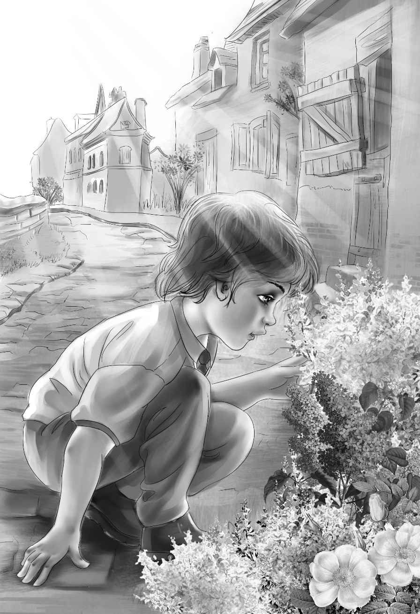

The next day the children were up early. They had breakfast. They made their beds.
“We ought to go down to see Rita the first thing we do，” said Violet. “We were not very polite to her yesterday. All we could think of was Benny.”
“Very well，” said Alice laughing. She sat down at the kitchen table. “You four go to Rita’s and Joe and I will write a letter to your grandfather.”
So the four children went down the road. Rita came out when she saw them coming. She began at once to show Violet what to do next on the basket. “This will be just a small basket，” she said. “You can make them as big as you want to.”
When Violet finished her basket， Benny said，“That’s very pretty， Violet. You can give it to Grandfather.”
“So I can，” said Violet， very much pleased.“He likes things we make. Now we must pay for it， Henry.”
“You have paid for it already，” said Rita， smiling. “The big boy paid me for the basket and the lesson and the trip into the woods. He really paid me too much.” She looked at Benny and took hold of his hands. “Don’t you run away，again， little boy. You make too much trouble for the hermit.”
“For the hermit？”cried Jessie. “It was more trouble for us.”
“No，”said Rita，shaking her head.“Dave Hunter was upset. I could see he liked Benny. It is the first time he has said more than one word at a time. My father says he was a very nice young man once. He built that house you are staying in.”
“He did！” cried Henry. “Did he live there himself？”
“Oh， yes. Many years ago. My father told me about it last night， after you found the little boy. He said Dave went away to work， and stayed a long， long time. When he came back he was different. He stayed in his little house for about a week， and one night some mean-looking men came to see him. They had a fight， and then they went away and left Dave alone. In a few days Dave went into the woods and built his cabin and he has stayed there ever since. He wouldn’t ever talk.”
As the excited children started back to Old Village， Benny said， “Jessie， Jessie， maybe Dave Hunter is Bill.”
“Why do you say that， young fellow？” asked Henry.
“Well， Bill could build houses. He built the little yellow house on Surprise Island and he built the little house here in Old Village.”
“Maybe you’re right， Benny，” said Jessie in excitement.“What would we ever do without you？ Let’s see what Joe and Alice think.”
Joe and Alice had finished their letter when the children rushed in and began to tell their story.
“So Dave Hunter built this house， did he？” said Joe. “That must have been a long time ago，for it’s an old house.”
“Joe， Joe！ I have an idea，” cried Henry.“Look around you at this house. Now—all of you pretend for a minute you’re in the little yellow house on Surprise Island.” He pointed around him as he went on， “There’s the fireplace of the little yellow house， and there’s the door， and there’s the window.”
“Of course，” said Violet，“there’s the bedroom.”
“And there’s the kitchen，” yelled Benny. “I guess Bill could just build one kind of house.”
“Why， this old house is exactly the same as the little yellow house！” cried Jessie，“the same front door with two windows on one side and one on the other.”
“The same chimney！” shouted Benny.
“And the same front steps，” said Alice slowly.“Last night I felt as if I were sitting on the steps of the little yellow house.”
“So that’s what it was！” cried Joe. “I felt that way， too. We sat there so many times after supper on our wedding trip.”
They all looked at each other.
“Now， let’s see how this was，” Henry said，excitedly. “Bill lived here first. Then he went to work for Great-grandfather Alden. Then he married Mrs. McGregor， and they lived on Surprise Island where he took care of the horses.”
“They lived in the little yellow house，” said Benny.
“That’s right，” said Henry.“He built it，Grandfather said， with the help of his brother.”
“Oh， that brother， Sam！” cried Joe.“He was not much good. I think Sam is the clue to this mystery.”
“So do I，” said Henry. “Remember Bill sold two race horses and went away without giving Mr. Alden the money.”
“Now we’re getting somewhere，” said Joe.“That’s why Bill disappeared.”
“But why didn’t he let his wife know where he was all those years？” asked Violet gently.“He loved Margaret.”
“I don’t know，”said Henry. “That’s the mystery. Maybe his brother wouldn’t give the money back， and Bill wouldn’t go home without it.”
Then Violet said softly， “Joe！”
“What is it？” asked Joe quickly.
“Do you suppose Bill’s brother hid the money in this house？”
“Maybe，” said Joe， thinking. “But it’s not a yellow house.”
“Of course he did！” said Benny. “That’s why Bill took the rowboat that night and came up here. I bet those mean-looking men were the friends， and they were looking for the money，too. Remember Rita said they had a fight？”
“Good， Benny，” said Joe. “I guess they tried to make Bill give them the money，and Bill couldn’t find it himself.”
“And there’s the mystery all solved，” said Alice laughing.
“Well，” said Henry， “I’m sure now that Dave Hunter is Bill. But where’s the money，and where’s the tin box？”
“Let’s hunt，” said Benny. “How about the chimney？”
“Not the chimney，” said Henry. “Bill would have found the money if it were in the chimney.”
“That’s right，” Benny answered.
“Not much to see，” said Jessie. “A chest and a few chairs. And our cots.”
“Do you think we ought to talk with the hermit， Joe？” asked Henry.
“No， not yet，” answered Joe. “I don’t think he would talk.”
“Well， I’m not going to sit here，” said Benny.“Let’s do something.”
“OK.” said Henry， getting up. “We can hunt for clues in the chest. There might be a secret drawer in it.”
“Let me see，” began Jessie. “The chest has three drawers. Joe and Alice can look in one drawer， Henry and Benny in another， and Violet and I in the third.”
Soon the whole family was busy. First they took the old dusty papers out of the drawers. They tapped each drawer， hunting for a secret drawer. They found nothing but dust.
“Ho-hum，” said Benny. “What shall we do now， Jessie？”
“Oh， I’m sure I don’t know，” cried Jessie. Everyone looked at her.
“You’re not cross， are you， Jessie？” asked Benny.
Jessie laughed a little. “Maybe I am，” she said.“I did hope we would find the money in that chest. But we tapped every drawer. There is no secret drawer there. Let’s go outdoors and sit on the steps.”
The family went outdoors slowly and sat down on the steps. Nobody said a word. Jessie Was not often cross.
Pretty soon Benny said， “I wonder where the toad is？ I suppose he stays under the steps.”
Alice smiled at Benny， but nobody felt like answering him.
Benny went on. “Does a toad have a house？What kind of a house does he live in， Jessie？”
“Oh， Benny！ I don’t know！ I’m so tired！ You want to know everything！ Why do you want to ask about toads now， when we want to find a tin box！” She almost laughed.
“Never mind， Jessie，” said Benny quickly.“I’ll look for myself.”
The little boy got down on his hands and knees. Soon he was lying on the ground looking under the steps with one eye.
“I can see him. He’s just sitting there. He winked at me.”
Benny picked up a long stick.
“Don’t hurt the toad， Benny，” said Joe.
“Oh， no. I’m just going to see how big his room is.” Benny began to move the stick from one side to the other. Then he crawled quietly to the back of the steps where there was a big hole under the house. The toad jumped through the hole， and Benny followed him. Everyone had to smile. They knew that Benny was crawling under the house.
Soon they heard him talking to himself.“Here’s a pretty white stone，” he was saying，“and here’s an old tin can. Here’s a screwdriver. Not a bad screwdriver.”
Then he was silent.
But the others could hear him crawling around under the house.
“Never mind， Jessie，” said Joe with a smile.“He’s having fun. Children forget things very soon， you know.”
Then they heard Benny say， “Well， here’s the toad！ Hello， Toad！ Where do you live？”
“He seems to be having quite a talk with a toad，” said Henry， laughing.
Benny went on，“Do you live in that old wooden box under the house？ That’s funny. It’s open in the back instead of the front. Do you go in the back door？ Why do you do that？ Well，well. Ho-hum—HENRY！ There’s a tin box here！”

“What？”shouted Henry，almost falling down the steps.
“I’ve found it！” yelled Benny. “A tin box sitting right in a wooden box！”
The whole family was down on the grass looking under the steps.
“You come out， Benny！” shouted Joe. “Bring the box. We can see better out here.”
“I was coming， anyway，” said Benny. He came crawling as fast as he could through the hole. He pushed the tin box ahead of him， and came out from under the steps.
“Sure enough！” cried Jessie. “It is a tin box. I can hardly believe it. Now I only hope there is something in it.”
“There is，” said Benny. “I shook it.”
The excited children sat back and looked at the box. “You open it， Henry，” said Benny，“It’s too hard for me.”
Henry’s hands shook as he pulled the box open. There before their eyes were piles of green bills.
“Dollar bills！” Benny whispered.
“No， Benny， they are one-hundred dollar bills！” said Henry. “I never saw one before.”
“Let’s count them，” cried Benny.
“You count， Benny. You found them，” said Jessie in a kind voice.
Benny was so excited he could hardly count straight. At last he said， “That’s forty， and that’s all. How much is forty one-hundred dollar bills，Henry？”
“Four thousand dollars， young fellow，” said Henry.“Isn’t that what two race horses would be worth， Joe？”
“Just about，” said Joe.
“Boy， oh boy！” cried Benny. He was all tired out with excitement.
They all looked at each other. Then they looked at the tin box and the pile of green bills.
“Well， Joe，” said Henry at last， “where do we go from here？”
“I think，” answered Joe， “that when we get rested， we’d better go and see the hermit.”
“The hermit is Dave Hunter. And Dave Hunter is Bill，” said Benny.
“I think so， too，” said Joe with a smile. “But even now， maybe he won’t talk.”
Jessie put her arm around her little brother.“I’m awfully sorry I was cross， Benny，” she said.“It’s lucky you do want to know everything. If you hadn’t looked in the toad’s house，we would never have found the tin box.”